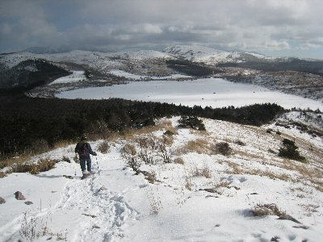
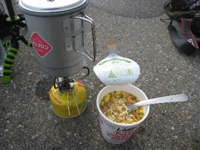

スノーシューin鷲ヶ峰 | 2011年1月 |
|---|---|
| maxが居るうちにスノーシューに行こう！ まあ、他にスノーシューする人居ないしね。 で、夏に行った鷲ヶ峰＋八島湿原に行ってみました。夏の時に、冬も良い感じになるんじゃないかなと考えていたので、行ってみたかったんですよね。参加者２人。 早朝出れば良いでしょうと言っていた言葉とは裏腹に、maxは3時出発と通達してきました。3時は一応は早朝か・・・・夜中じゃね？ そんな早くなくても良いんじゃない。とは思いましたが、仕方ない早めに寝ることにしよう。 朝3時に静岡を出発して、5時半ぐらいに八ヶ岳PA到着。ここで仮眠と言うが、そんな話を聞いていない私はシュラフの用意などない。かろうじて膝かけを持っていた程度である。横を見ると、maxは暖かそうなダウンのシュラフを掛けているではないか。 エコなのか、燃費向上なのか、エンジンを止めて仮眠タイム。しかしながら、私は寒くて寝れるどころではない。まあ、来る途中の車の中で寝てはいたが。 | |
 枝もまっ白 |  着いたとたん、寒い中ビールを行っちゃう人も |
| PAで朝食をとり、諏訪ICからビーナスラインを通って八島湿原へ。さすがに眠くて私は半分寝てた。車、暖房効いてるし。 ビーナスラインは八島湿原まで除雪されていて、そこから先は冬季閉鎖。誰もいないと思ったら、ボクらのほかに中高年夫婦が訪れていた。スノーシューではないが恰好からして湿原散策だろう。 天気の良いうちに展望が良い所に行こうと、鷲ヶ峰に登り始める。天気は良いが気温は低く、正直寒い。ここで帽子を忘れたことに気づいたが、しょうがない。ウェアのフードでカバーしよう。 山肌は草が出ているが、登山道には雪が有り、スノーシューを楽しめた。もちろん、このくらいの積雪ならスノーシューでなくても行けるのだが、スノーシューで行くことに意味が有るのだ！ | |
 天気は良いんです。寒いけど |  まっ白な八島湿原 |
| 山の稜線では木や草等の風除けがないため、横殴りの風が強く吹き付け、体温とやる気と根性をそぎ取っていく。夏に来た展望スペースから八島湿原を眺めると、白い平原が広がっていて、所々木が顔を出している。周囲の山々は草が多く露出して雪は少なめであった。 展望スペースから鷲ヶ峰山頂が見えた。夏の時は気がつかなかったが近いな〜。 ものの５〜１０分程度で、スノーシューにて山頂到着。さすが展望が良くて、南は富士山、西は諏訪湖、さらに南アルプス、北東にも雪を頂いた山々が見える。北は白馬方面だろうか、黒い雪雲が山の上に掛っている。 早々に下山して、駐車場にて昼食タイム。お湯を沸かしてカップラーメンです。やっぱ寒い時は暖かいものだよ。手袋から手を出していると、寒さで手がかじかんでくる。カップラーメンもどんどん冷めていくので、早めに食べる。 | |
 鷲ヶ峰山頂。スノーシューで制覇 |  鷲ヶ峰からの下り |
| 午後は湿原散策。と言っても、積雪が有っても湿原内には入ることはできないので、夏と同じく周囲を散策です。 木道をスノーシューで歩くのはとても困難を極め、（木道の真ん中は隙間があるから）湿原一周を諦め、森の中に入って行きました。 夏にはなかった、鹿侵入防止柵の扉を通って森の中に。 森の中は、誰も通った跡が無く（当然か）、フカフカの雪をスノーシューで蹴散らしながら歩きます。これが楽しい♪ これぞスノーシューといった感じで、道なき道をただ歩きました。 途中で雪上コーヒー集会を行い、本日のスノーシューを終了しました。 ここは、雪がドッカリと降った直後に来ると、なお良いでしょうね。景色ももっと堪能出来ると思います。写真撮りまくりでしょうな。 スノーシューが無くても、登山靴にスパッツでも散策は可能です。（森の中は厳しいけどね。木道の上は凍っていて滑るかも知れないから気をつけてね）あと寒さ対策は万全に。手袋に帽子、ホッカイロは必需品。持っていて楽しいのは、バーナーとお茶セットでしょう。寒いところでのお茶は良いですよ。 やっぱり、雪遊びは楽しい♪ 寒いけどね。最近は色々と雪上を歩く道具も有るようで、そう言うのも試してみたいですね〜 | |
|  お昼のカップラーメン |  冬の八島湿原 |
| 写真＆コメント ｂｙ べっしー | |